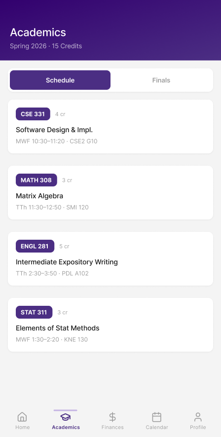
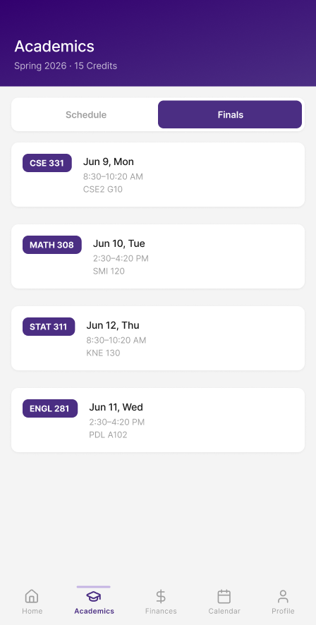
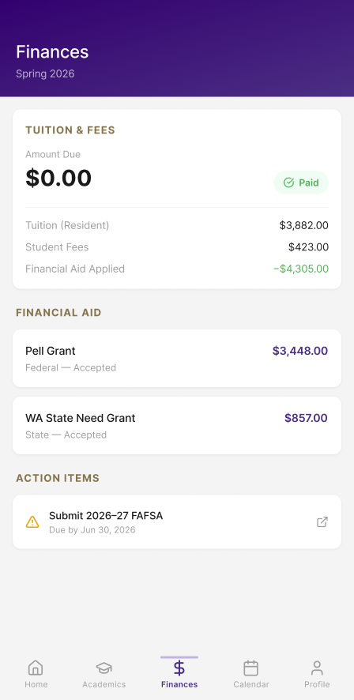
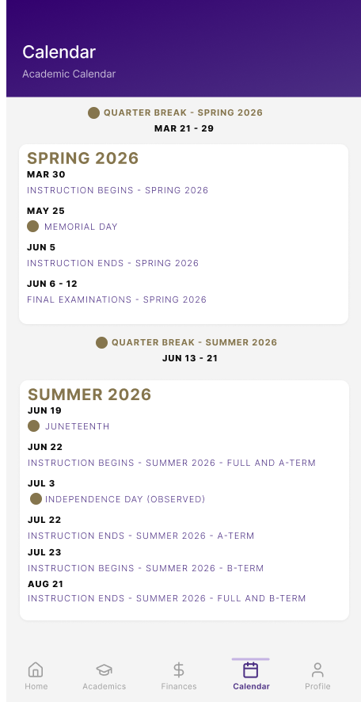
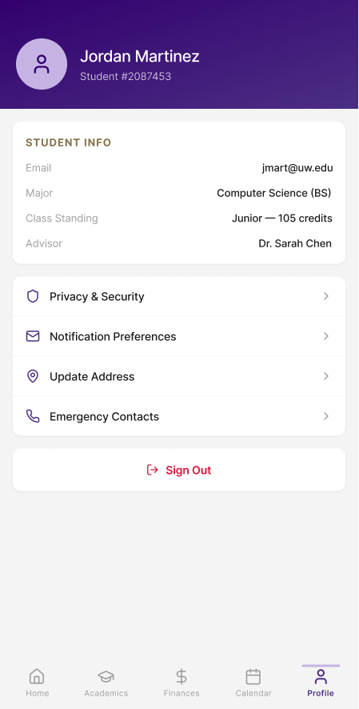

App Redesign / UX Design
MyUW Mobile App Redesign
Overview
MyUW is the University of Washington's official student portal app — a hub for academics, finances, registration, campus events, and more. While it provides access to nearly every system a student might need, the current design buries critical information behind a hamburger menu and presents the home screen as an undifferentiated wall of content.
This project is a ground-up redesign of the MyUW mobile experience. The goal was to reduce cognitive load on the home screen, replace navigational friction with a persistent bottom tab bar, and establish a clear visual hierarchy that surfaces what matters most to a student on any given day.
The Problem
Three core usability issues surfaced during heuristic evaluation of the current app:
- 01 — Information Overload The home screen displays every available module simultaneously — balances, notices, events, links, and widgets — with no prioritization. Students are forced to scan the entire screen to locate time-sensitive information.
- 02 — Navigation Friction Primary navigation is hidden behind a hamburger menu in the top-left corner. Switching between sections — Academics, Finances, Calendar — requires two taps minimum and offers no persistent orientation cues.
- 03 — Weak Visual Hierarchy Content sections share the same visual weight regardless of urgency or relevance. Action items, informational content, and quick links are styled identically, making it difficult to distinguish what requires attention from what is merely available.
Approach
The redesign process began with a heuristic evaluation of the current MyUW app against Nielsen's 10 usability heuristics, focusing on visibility of system status, recognition over recall, and flexibility of navigation.
Competitive analysis of peer university apps (UCLA Mobile, CU Boulder Mobile, UMich App) identified bottom tab navigation as the dominant pattern for student portals, confirming the hamburger menu as an outlier. All comparators surfaced time-sensitive content (class schedules, balances, deadlines) in a prioritized home card hierarchy rather than flat lists.
The redesign was developed as a high-fidelity prototype in Figma, covering six screens across all five navigation tabs.
Project Purpose: Practicing AI in Design
I designed this as an AI-assisted workflow exercise. I started by diagnosing the real UX problems in the current MyUW app, then used AI to accelerate early ideation—without losing control of the direction or the design rationale.
After identifying the gaps (home screen information overload and hamburger-driven navigation friction), I used Claude to draft a Figma Make prompt grounded in my findings and constrained by the required UW brand colors. Figma Make generated an initial prototype, which I then iterated in Figma by resolving errors and refining the interaction flows to match the design intent.
Design Decisions
Decision 01
Bottom Tab Navigation
Replaced the hamburger menu with a persistent five-tab bottom nav bar: Home, Academics, Finances, Calendar, and Profile. This follows platform conventions for iOS and Android, reduces the tap depth to any top-level section from two to one, and provides constant orientation context as students move through the app.
Decision 02
Prioritized Home Screen
The home screen now leads with a personalized header and Husky Card balance widget — two pieces of information students check most frequently. Quick Links are reorganized into a 3x2 icon grid, collapsing the most-used services into a scannable pattern. Notifications are surfaced as a single action banner rather than buried in a menu.
Decision 03
Academics: Tab Toggle for Schedule vs. Finals
The Academics page uses a segmented tab control to switch between the class schedule and finals schedule — two related but distinct views students need at different times of the quarter. Each course is presented as a card with a color-coded course code badge, reducing scanning time for multi-course schedules.
Decision 04
Finances: Hierarchy by Urgency
The Finances page separates content into three distinct sections — Tuition & Fees, Financial Aid, and Action Items — ordered by urgency. The "Amount Due" balance is the primary visual element. Financial aid awards are shown as accepted/pending cards. A dedicated Action Items section surfaces deadlines like FAFSA submission with explicit due dates and external link affordances.
Decision 05
Calendar: Academic Timeline View
Rather than a generic calendar grid, the Calendar page presents the academic year as a structured timeline — Quarter Breaks as dividers, key dates as labeled list items with visual hierarchy (quarter headers in gold, individual events in purple). This maps to how students actually use the academic calendar: sequentially, to plan ahead, not to find a specific date.
Decision 06
UW Brand Identity
The redesign uses the official UW color system — Husky Purple (#4B2E83) as the primary brand color with Husky Gold (#85754D) as an accent. This creates a more cohesive connection to the UW identity while improving contrast ratios over the current app's inconsistent palette.
Redesigned Screens
Six screens across five navigation tabs — click any screen to expand.

Academics / Schedule
Academics / Finals
Finances
Calendar
ProfileReflection
The central insight from this redesign is that the original MyUW app's problems are not primarily visual — they are structural. The hamburger menu is not a stylistic choice; it is a navigation architecture that forces students to hold the app's information hierarchy in memory rather than seeing it. Replacing it with a bottom tab bar is a single structural change that resolves the core navigation complaint.
The most challenging design decision was the home screen. The original shows everything because everything in the app is potentially relevant. The redesign makes an editorial argument: Husky Card balance, Quick Links, notifications, and upcoming events are the right things to show on arrival. That argument would benefit from validation through usability testing with current UW students — a natural next step.